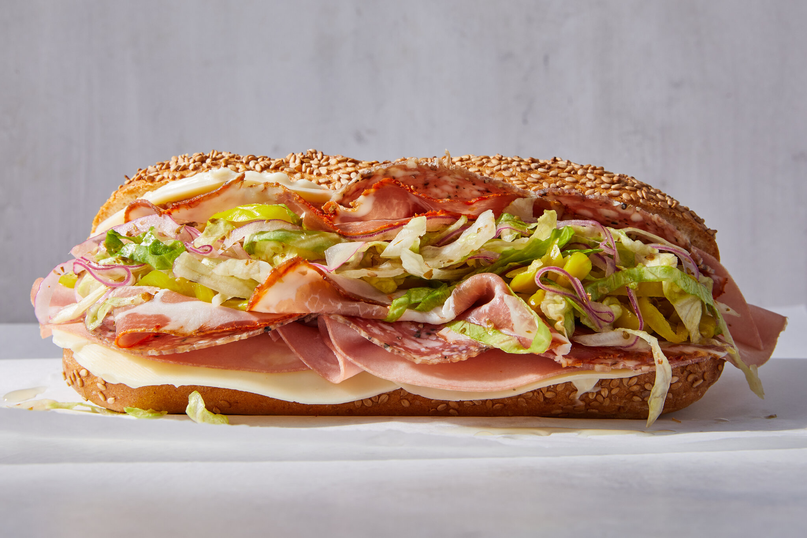

Italian Sandwich

Description
This recipe has been passed down from my grandma, to me, it's the best recipe of an italian sandwich you will find today
Igredients
- 1 small bread or pita
- mozzarella
- italian ham
- butter
- one tomato or 5 cherry tomatoes
Steps
- Cut your bread or pita
- Apply butter lightly on outside
- Toast your bread for extra crispyness
- Add salt,pepper and italian seasoning to tase
- It's time to add your italian ham
- You can also use italian salami if you want it spicy
- Afterwhich you'll add your sliced tomato/es
-
Now we add the mozarella
- Grate your mozarella if not grated
- Optional: Add parmegiano reggiano
-
Last stop, the oven
- Preheat the oven to around 150 celsius
- Add your sandwich to a pan wih baking paper
- Drizzle a little bit of olive oil on top of the mozarella
- Make sure the mozarella is exposed, and the sandwich is open
- Now, bake your sandwich for 5 minutes or until the cheese is crispy
And there you have it, a perfect italian sandwich, made the American WAY!
For more recipes